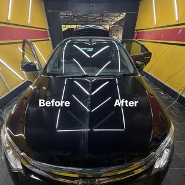

RESTORE. PROTECT. ENHANCE.
Car detailing.
Dent repair.
Paint protection.
Paintless dent repair, polishing, ceramic coatings and PPF at our F-11/1 workshop. Speak with the team about the right service for your car.
Under the supervision of
Sabir Ali Denter

INSIDE OUR STUDIOPAINT CORRECTION
AT OUR F-11/1 STUDIO
Paint correction
OUR SERVICES
Services at the studio
Restoration, refinement and protection.
Find the right treatment for your vehicle.
Paintless dent repair
Dry dent removal, hail damage, body lines, aluminium panels and door dings.
RESTORE THE SHAPE 02Paint protection film
Self-healing film options in gloss and matte for everyday paint protection.
PROTECT THE FINISH 03Ceramic & graphene
Coating treatments to complement a carefully corrected, polished finish.
ENHANCE THE GLOSS 04Inside-out detailing
Interior deep cleaning, paint correction, engine bay care and wash & wax.
REFRESH EVERY DETAILALSO AT THE STUDIO Headlight restoration/Denting & painting/Wrap tints/Interior restoration
WORKSHOP GALLERY
Our workshop photos
Original vehicle photography from the studio’s public Facebook page.
ABOUT THE STUDIO
The Car Care Centre
with Sabir Ali Denter
The Car Care Centre Detailing Studio brings paintless dent repair, detailing and paint protection together at its F-11/1 workshop. Work is carried out under the supervision of Sabir Ali Denter, with services for everyday, luxury and imported vehicles.
آپ کی گاڑی کی خوبصورتی، ہماری توجہ اور مہارت۔
Speak with Sabir AliCONTACT THE TEAM
Request a quote
for your vehicle.
Tell us what you drive and what you need.
Then share a few photos with the team on WhatsApp.
LOCATION
Find us in F-11/1.
Golra Service Road, Khokhar Chowk,in front of Nazim-ud-Din Road,
F-11/1, Islamabad, Pakistan.Get directions
Listed hours: 9:00 AM – 10:00 PM, Mon–Thu & Sat–Sun.
Friday hours are unlisted; please call to confirm all timings.